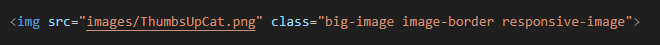
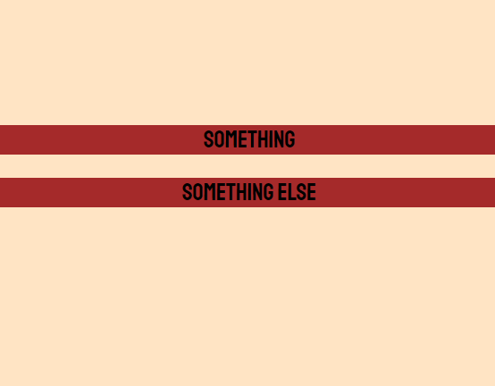
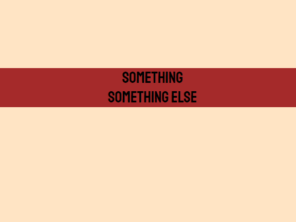
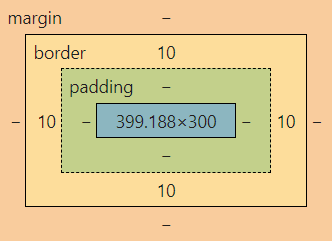
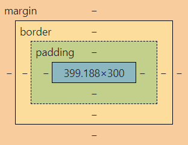
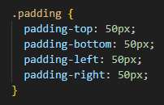
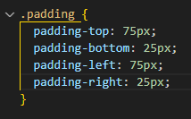

This post is going to be exploring the differences between
Margin, Border, and Padding in CSS.
To understand that you must first understand the very fundamentals of what we refer to as an "Element".
An element is any given line of code on an HTML document, they are the building blocks in which delevopers use to create websites. An element can be something that an user will see like a paragraph, an image, or even a link.
Here is an example of what an element could look like.
And that element is what you see being displayed on the home page
You next need to understand classes, classes are what we use to group certain elements together to get the same attributes. For example by using classes you can change a texts font, you could change the size and color of the font.
Now that you have a very vague understanding of what an element and class is lets get into explaining the differences between Margin, Border, and Padding. We'll tackle them all one by one to really flesh them out and then come back and compare them in our conclusion, first up is Margin.
Margin is what developers use to move any given element around that is currently being displayed on the screen, when you want to move a box over more you would typically use margin to do so
Take these boxes for example, we really want to get these two elements to be touching, and one way of doing that is with margins.
We're going to try and bring the bottom element up to the top element. How we would do that is by going into our CSS file and creating a class called ".gap-closer", and we'll add the attributes of "margin: -26px 0px 0px 0px".
This will bring the bottom text up to the top text and close the gap between them.
Next up is borders, as you may of noticed all the example images have a black border arround them. Borders add a layer around the entire element, it is mainly for aethetics and to help users interface with a website.
As you can see here on the CSS box model available in the developer tools (Inspect Element), the blue box in the center is the actual image size, and the yellow box that is surrounding both the padding and the image is the border. On the first image there is 10 pixel wide border on each side of the image, and on the second image you'll notice that the 10 pixels wide border is gone and it has not effected the element inside. The image remains the exact same height and width regardless.
 Last up is padding, padding is very useful for moving an elements displayed text around inside a box, instead of moving an element like a margin does or adding a layer around the entire element like a border does, padding can be used to make the element larger
Here we have some text in the middle of a box full of padding, lets say we want to move said text using padding down to the bottom right, to achieve this we can edit our padding class that has been applied to this element.
We'll add more padding on the opposite end of where we want our text to end up, so we'll increase the padding of the top and left by 25px and decrease the bottom and right by 25px.
This way we end up with the desired result of moving it further to the bottom right.

In conclusion, each of the three have their own uses and are very unique. Margins can be used to move elements, borders can be used to add a surround to an element, and padding can be used to add more to an element. I hope this helped you learn something new, and if not that's even better because that means you knew this all already.